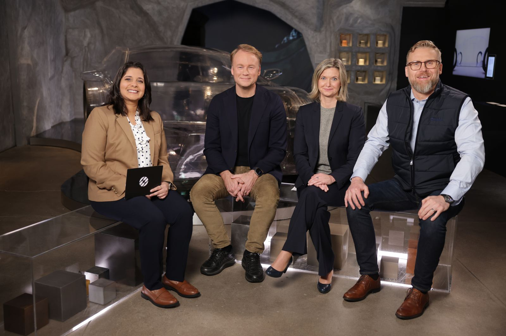
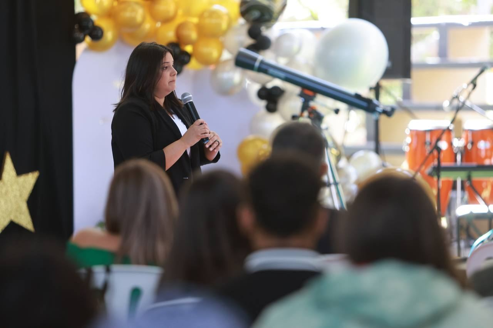

Joan is a dynamic keynote speaker who brings the energy of a rocket launch and the heart of a mentor to every stage. Drawing from her journey from Puerto Rico to NASA, she delivers talks that are equal parts technical credibility, personal storytelling, and actionable inspiration.
Whether she's speaking to a room of aerospace engineers, university students, or corporate leaders, Joan has a rare ability to connect across industries and backgrounds, leaving audiences genuinely fired up to act.
Book Joan to SpeakSignature Talks
Each keynote is tailored to your audience and can be delivered virtually or in-person. Below are Joan's core signature talks — spanning space exploration, diversity, resilience, and professional growth.



Joan was invited to moderate a high-level industry roundtable with Sandvik, exploring how the mining sector can close its growing talent gap. The conversation brought together engineers, executives, and educators to tackle workforce challenges at the intersection of technology and operations.
The event highlights Joan's reach beyond aerospace, demonstrating her ability to lead meaningful conversations across engineering disciplines as a trusted voice on talent, diversity, and the future of technical careers.
Ready to book Joan for your event?
Whether virtual or in-person, Joan tailors every talk to your audience. Reach out with your event details, theme, and audience — and let's make it unforgettable.